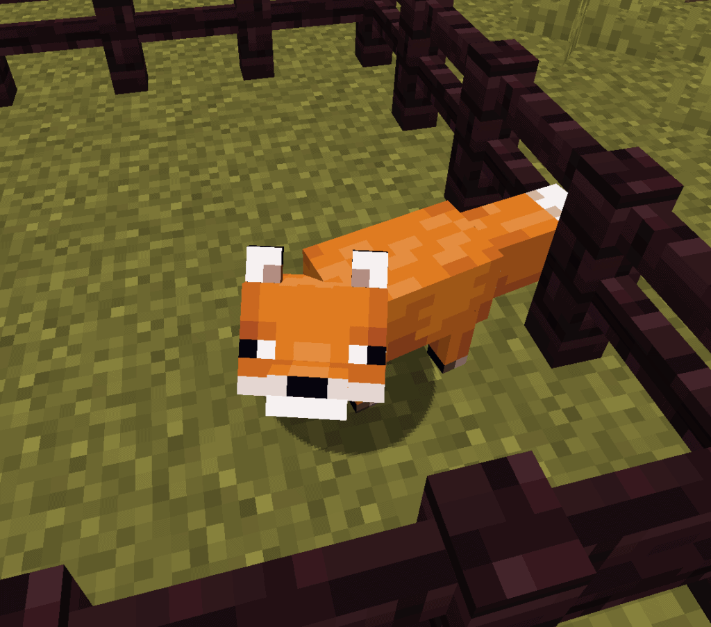
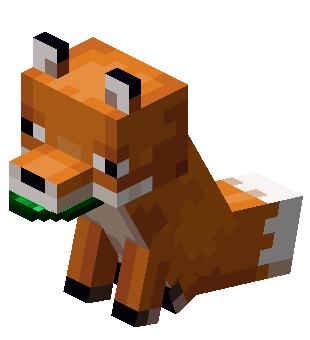
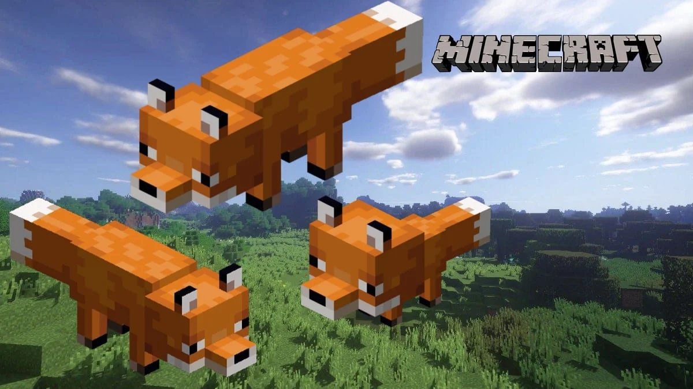
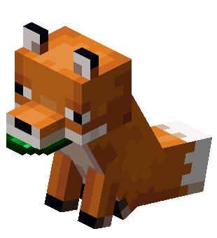
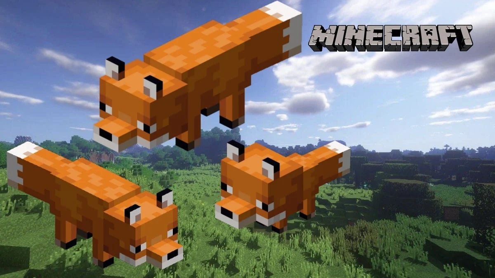
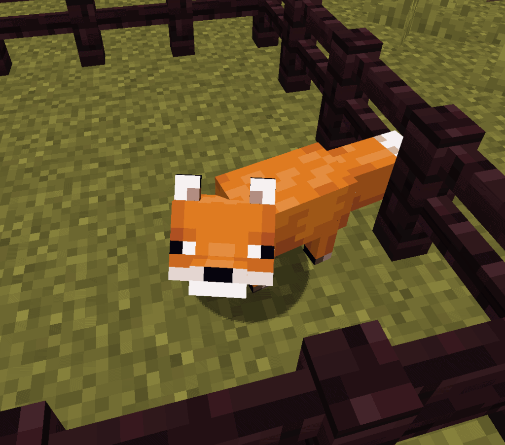
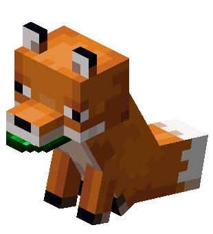
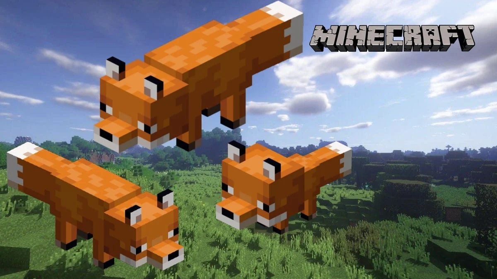

Fox
A fox is a tameable passive mob that spawns in taigas, old growth taigas, snowy taigas and mountain groves. They are able to carry a single item in their mouth, but prefer food over other items.
 



A fox is a tameable passive mob that spawns in taigas, old growth taigas, snowy taigas and mountain groves. They are able to carry a single item in their mouth, but prefer food over other items.


